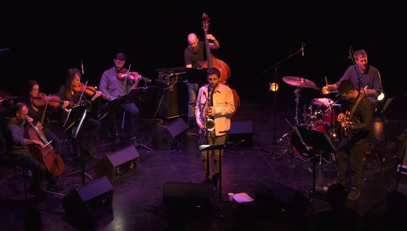

Festivals · Music
Jazz a la Calle 2027 (19th Encuentro Internacional de Músicos)
- Dates
- –
- Venue
- Manzana 20
- Location
- Mercedes, Uruguay
- Format
- In-person
- Category
- Music
- Industry
- Music
- Organiser
- Jazz a la Calle (Mercedes, Soriano)
- Official website
- https://jazzalacalle.com.uy/encuentro-internacional/
About
Free open-air festival with nine consecutive days of concerts, workshops and jams. Uruguay dates are local (Uruguay time, UTC-3 all year, no daylight saving).
Topics: jazz, street music, jam sessions, music education.
No organiser attendance figure found on the official pages checked (24 Nov 2026). Ranked by an estimated size tier 'large' (about 10,000-100,000 attendees; our judgement from format, venue and scale, not an official number).